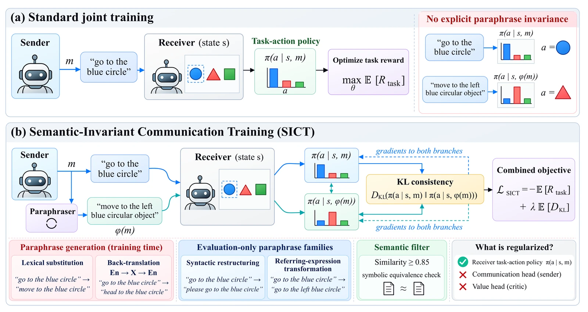
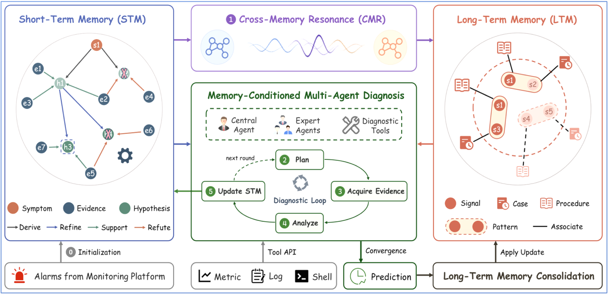
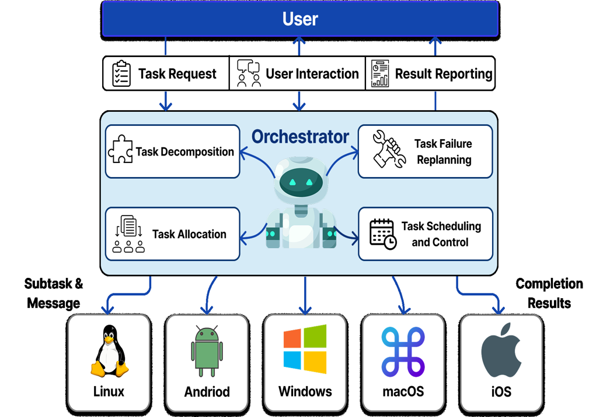
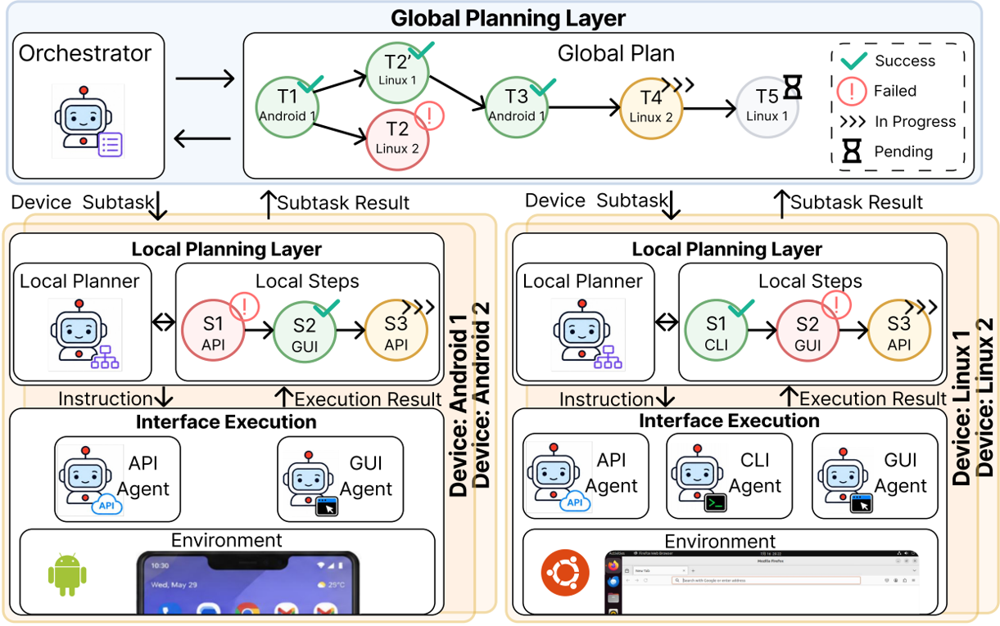
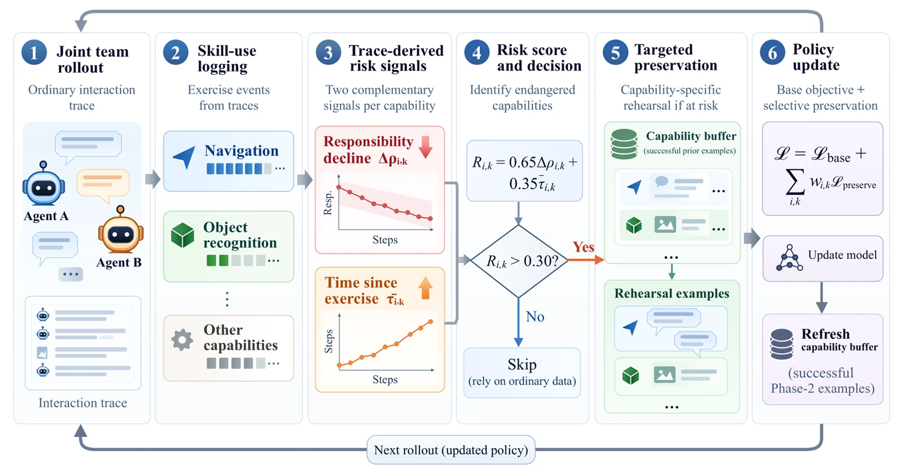

OctoNest: Adaptive Cross-Device Execution through Stateful Control
OctoNest is a stateful framework for executing tasks across heterogeneous devices. Device Agents refine subtasks and select execution modalities as conditions emerge during interaction, while an Orchestrator uses execution feedback to revise plans and device assignments. The work connects local modality control with task-level revision and evaluates cross-device execution through CAPEBench, covering cross-device seed tasks and the controlled perturbations introduced during evaluation.
Coordinates device-local modality refinement with feedback-driven plan and device reassignment.
Introduces CAPEBench: 158 instances from 23 cross-device seed tasks with controlled perturbations.
Improves Perfect Pass by 18.35 percentage points over the strongest baseline; reduces token cost per Perfect Pass by 39.8%.
ChainLoRA: Geometry-Preserving Task Vector Merging for Continual Learning in LLMs
ChainLoRA studies replay-free continual parameter-efficient fine-tuning by treating forgetting as geometric interference between task updates. It combines chain-updated training with adaptive SVD merging after the task stream, maintaining constant historical-state overhead. Procrustes adaptation aligns a shared carrier with the latest task, while shared and task-specific components are separated during merging. A one-sided orthogonality proxy and effective-rank penalty regularize interference and task-subspace use.
Combines chain-updated training and adaptive SVD merging with constant historical-state overhead.
Separates shared and task-specific components through Procrustes alignment and geometric regularization.
Reports strong replay-free results on Large and SuperNI, with competitive results on Standard CL.
When Coordination Comes at a Cost: Training-Induced Fragility in Multi-Agent Communication
This study examines how joint training can improve coordination while making agents more sensitive to meaning-preserving changes in messages. Matched comparisons separate joint versus independent updating from fixed versus rotating partner exposure, evaluating paraphrase robustness alongside canonical task success. Semantic-Invariant Communication Training (SICT) addresses this fragility by aligning receiver task-action policies across equivalent messages, with robustness evaluated on held-out paraphrase generators as well.
Separates update coupling from partner exposure through matched training comparisons.
Measures robustness to meaning-preserving message changes alongside canonical task success.
Uses receiver task-action consistency to reduce fragility, including on held-out paraphrase generators.

04Heterogeneous Multi-Agent Systems
RELAY: A Heterogeneous Multi-Agent Architecture for Long-Horizon Dynamic Coordination and Multi-Device Control
RELAY is a heterogeneous multi-agent architecture for long-horizon coordination across devices and interfaces. An orchestrator decomposes tasks, allocates subtasks, schedules execution, and replans after failures, while short- and long-term memory preserve progress and reusable experience across sessions. The supplied project deck presents Android, Linux, Windows, macOS, and iOS as supported execution environments.
Unifies task decomposition, allocation, scheduling, and failure replanning in a single cross-device orchestration layer.
Combines short-term task state with long-term experience so interruptions do not force the whole task to restart.
The deck's comparison reports 2.0555 resource efficiency, 100.0% fault tolerance, and 32.51% accuracy for RELAY, alongside qualitative support for platform and interface switching.



05Applied AI Systems
Visual2Craft: From Construction Videos to Executable Minecraft Builds
Visual2Craft is a desktop workflow that turns Minecraft construction videos into executable Java Edition Data Packs. It samples source frames, uses a vision-capable AI model to reconstruct visible structures, and compiles validated scenes with build and undo functions.
What Team Success Hides: Compensation-Masked Capability Loss in Multi-Agent Language Systems
This work examines individual capability loss that aggregate team performance can hide when teammates compensate during specialization. It evaluates retained competence alongside team utility and uses teammate and practice interventions to distinguish compensation from preserved focal-agent ability. RACP combines responsibility decline and skill disuse into an online risk signal, directing selective rehearsal toward endangered capabilities while retaining the utility of team collaboration.
Evaluates retained individual competence alongside team performance during specialization.
Uses teammate and practice interventions to distinguish compensation from retained agent ability.
Tracks responsibility decline and disuse to guide selective rehearsal of at-risk capabilities.

Other Projects
01
Telecom Customer Service Intent Recognition
Applied AI Systems
Developed a dialogue-understanding and plan-prediction pipeline using 1,405 multi-turn telecom sessions. Combined structured plan retrieval and few-shot reasoning with LoRA/SFT experiments on open-source 7B models.
02
AI4MS Medical Knowledge Graph & RAG System
Knowledge Systems
Built a local, evidence-grounded QA prototype for multiple sclerosis materials using ChromaDB and multilingual MiniLM retrieval. Organized source documents and knowledge-graph-style structures with traceable passages and citations.
03
Style-Aware Humanoid Motion Generation
Embodied AI
Built a style-aware, language-conditioned motion-generation workflow around MoConVQ and HumanML3D-derived subsets. Packaged generation, adapter training, evaluation, and diagnostic reports with reproducibility notes.
04
SnapKV KV Cache Compression Reproduction
Inference Systems
Reproduced post-prefill KV cache compression using observation-window scoring and pooling. Compared latency, memory, and perplexity on WikiText and PG-19, with ablations over compression ratio, window size, and pooling kernels.
05
NatDedProp Proof Agent and Tooling
Formal Reasoning
Packaged natural-deduction proof tooling with a command-line checker, VS Code extension, and reusable proof prompts. Added a proof-agent workflow for .mmd files, connective-driven strategies, and JSONL diagnostics.